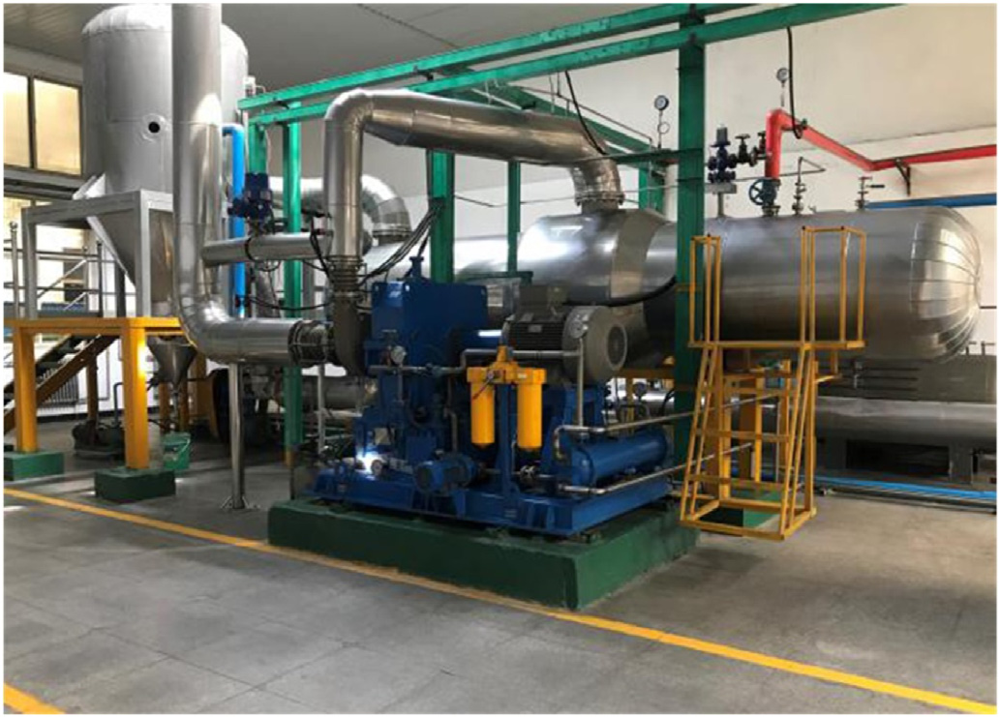
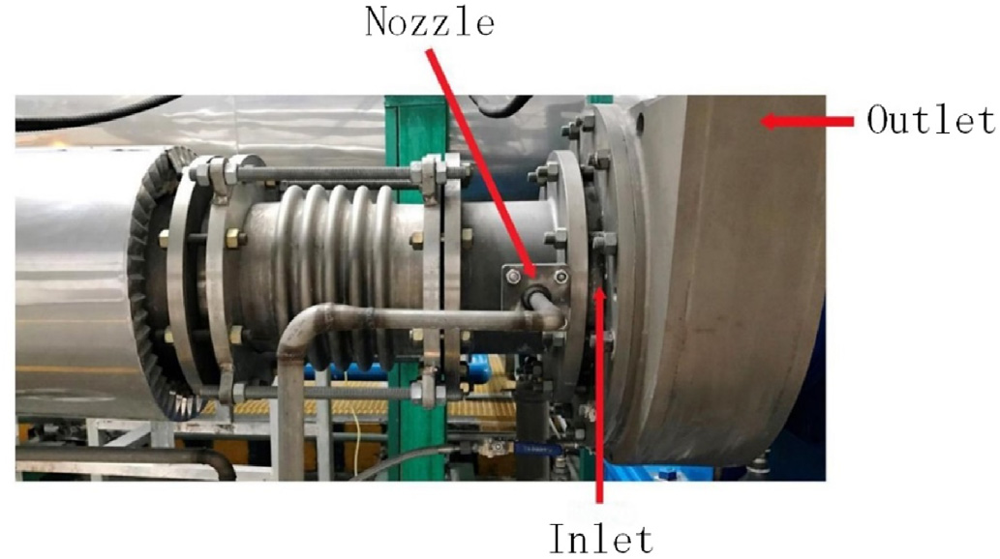
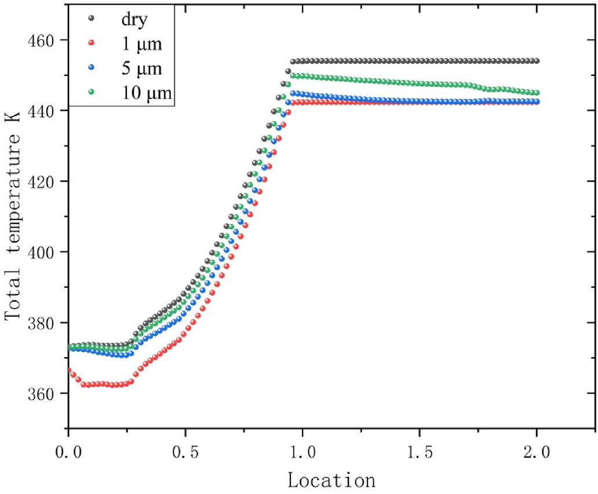
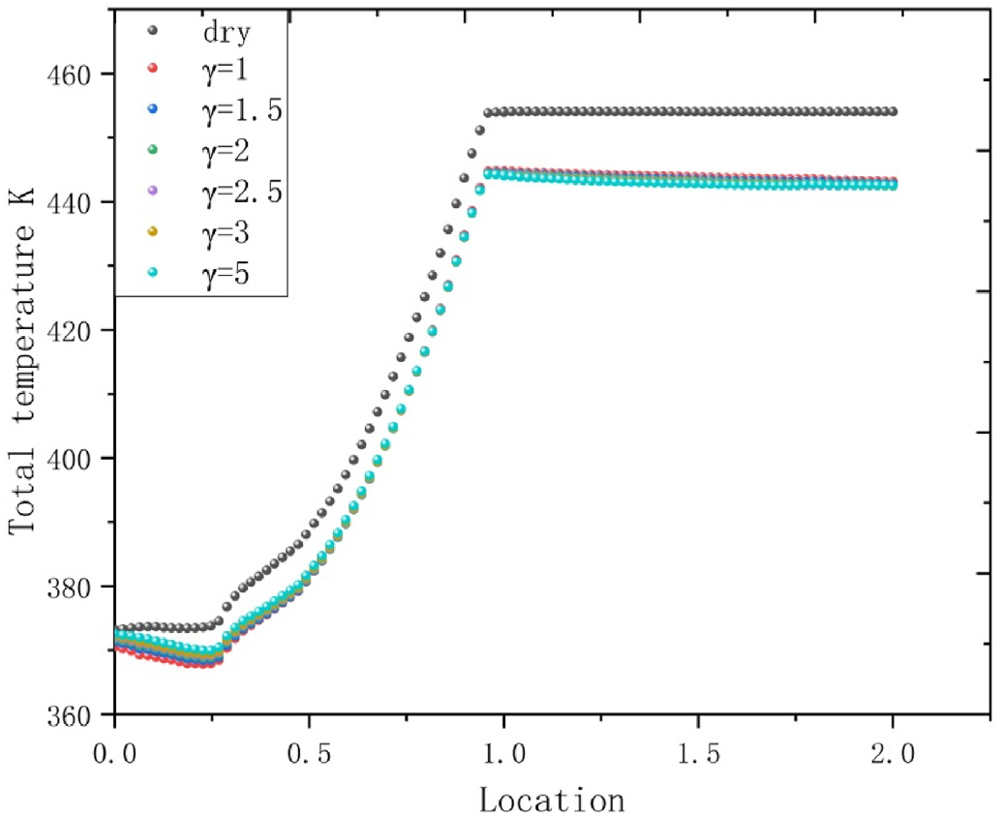
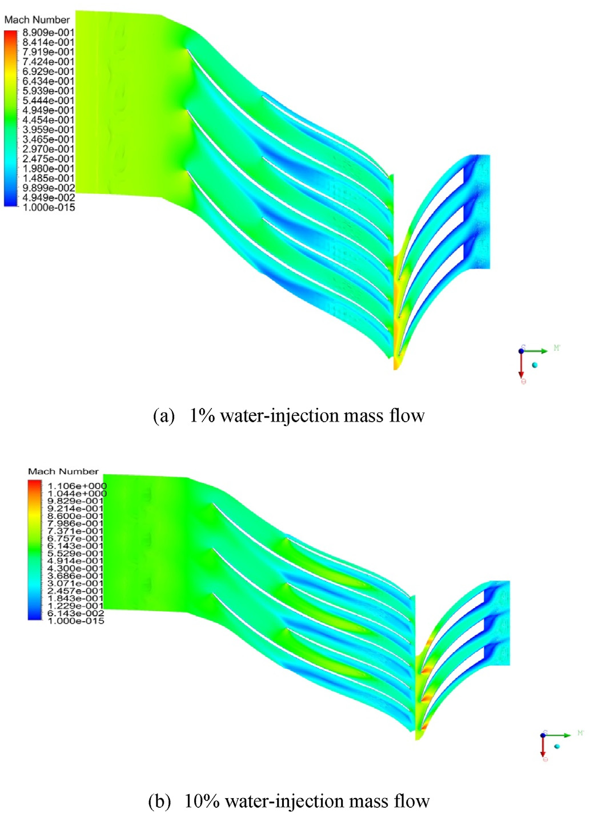
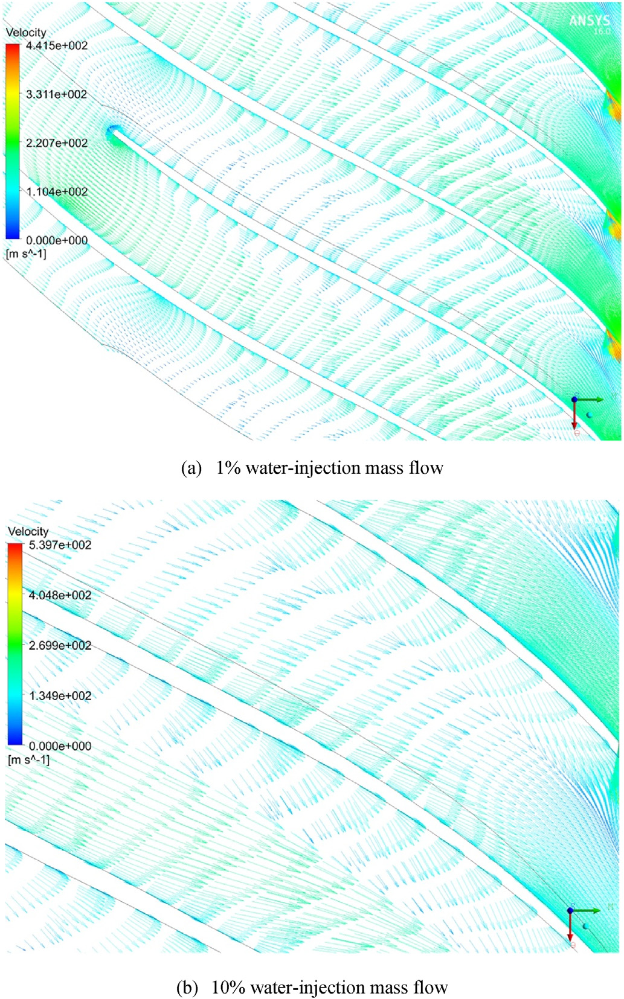
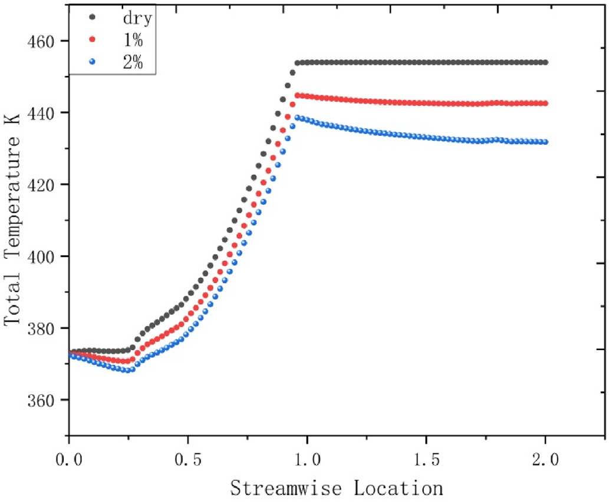
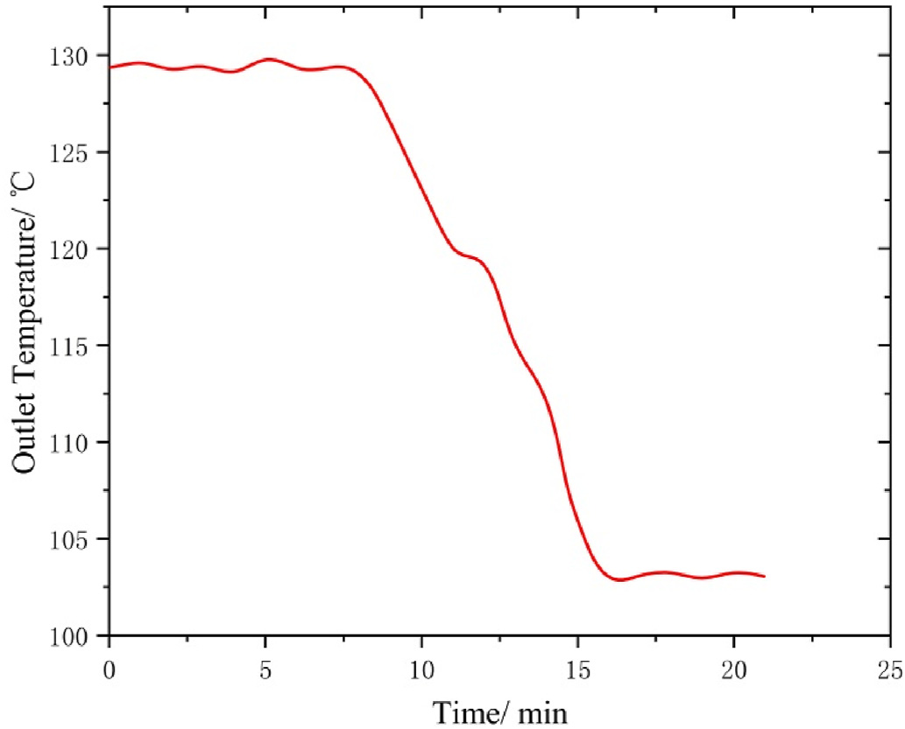
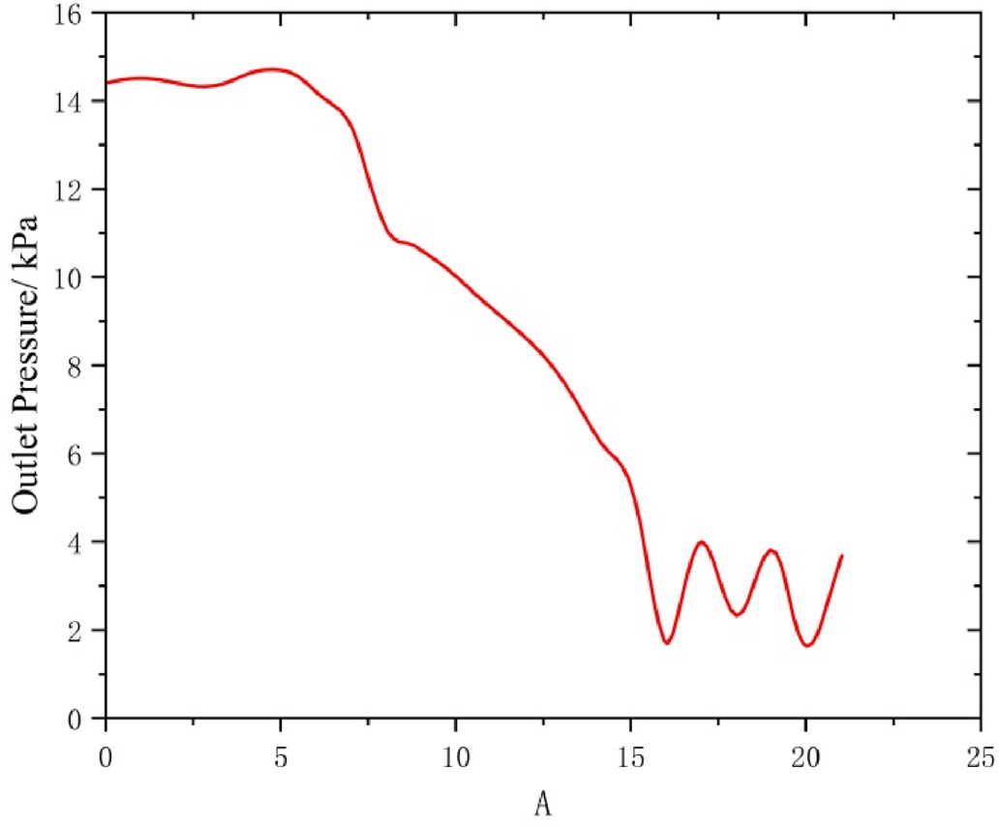

Contents lists available at ScienceDirect
Energy
j o u r n a l h o m e p a g e : w w w . e l s e v i e r . c o m / l o c a t e / e n e r g y
Performance analysis of the water-injected centrifugal vapor
compressor
Haoyu Yin , Hong Wu , Yulong Li *, Jin Quan
National Key Laboratory of Science and Technology on Aero Engines Aero-thermodynamics & Collaborative Innovation Center for Advanced Aero-Engine, School of Energy and Power Engineering, Beihang University, Beijing, 100191, PR China a r t i c l e i n f o
a b s t r a c t
Article history:
In industrial production, mechanical vapor recompression (MVR) technology is becoming more widely Received 8 October 2019
used. The performance of MVR will be further enhanced, if it can be combined with the wet compression Received in revised form
technology. However, the water-injected vapor compression is different from the wet air compression. In 25 March 2020
addition, the working environment of the centrifugal compressor is more complicated, which has Accepted 31 March 2020
tremendous potential in the MVR system. In this paper, the performance of the water-injected centrifugal Available online 9 April 2020
vapor compressor was analyzed by adopting numerical simulation and experimental methods. Since the injected water is atomized before entering the compressor, this study mainly analyses the impact of Keywords:
atomization uniformity on the water-injected compression and proposes a method to improve atomi-Mechanical vapor recompression
Water vapor compression
zation uniformity only by changing the parameter of the system. The results showed that excessive Heat transfer
diameter of droplets after atomization affects the stable operation of the compressor and enhancing the Mass transfer
atomization uniformity can greatly reduce the outlet temperature of the compressor. Moreover, Two-phase flow
increasing the water-injection mass flow rate not only reduce the outlet temperature but also improve atomization uniformity and compression performance, but the excessive water-injection mass flow rate may cause the compressor to surge.
© 2020 Elsevier Ltd. All rights reserved.
1. Introduction
into being due to the utilization of vaporization’s latent heat [16]. In the MVR evaporation system, the water vapor generated in the
In recent years, energy and environmental issues have become a
evaporation process is not directly discharged. Instead, the steam is focus of concern around the world. The major energy consumption further treated by a compression process to achieve higher tem-in the world is supplied by fossil fuels [1], which leads to global peratures and pressures. The compression process enables the
warming [2]. In order to protect the environment of the earth, it is water vapor to heat the evaporation medium, which achieves a
essential to find clean energy to achieve sustainable development.
high thermodynamic efficiency [17e19]. As only the crystalline Water has many advantages including environmentally friendly,
material and liquid water are present after evaporation [20], no non-polluting, accessible, safe and stable. It is often used as a latent heat is wasted in the process of vaporization. Therefore, MVR
refrigerant in air conditioning refrigeration, and heat pump tech-has broad prospects for applications and tremendous potentials for nology [3e6]. The processes of evaporation and condensation are development in saving energy and reducing consumption.
widely used in industrial production, such as for the treatment of In the MVR system, water vapor compression is the key process.
wastewater [7,8], the desalination of seawater [9e12], and the Experiments have shown that the energy loss during the process of production of foods and medicines [13e15]. In these fields, vapor water-injected vapor compression is the most serious, and the
plays an important role as the most common working fluid. In the enthalpy loss of this process is about 37.5% [21]. In order to improve past, the discharged high temperature vapor was not treated, which the application of water and steam in industrial production, it is resulted in a large amount of energy consumption and low effi-urgent to research and develop water vapor compressors. At pre-
ciency. Mechanical vapor recompression (MVR) technology came
sent, the major water vapor compressors mainly include centrifugal water vapor compressor, screw water vapor compressor and roots
water vapor compressor. There are also reciprocating and axial flow
* Corresponding author.
type
compressors
[22e24]. Their development limits the
E-mail address: liyulong1897@sina.com (Y. Li).
https://doi.org/10.1016/j.energy.2020.117538
0360-5442/© 2020 Elsevier Ltd. All rights reserved.
H. Yin et al. / Energy 200 (2020) 117538
Nomenclature
a,b,n,C1,C2,C3 Coefficient
Cl
Specific heat
l
Thermal conductivity of the gas phase
D10 & D90 Integral distributions
g
Spread parameter
D(4,3)
HERDAN mean diameter
rg
Vapor density
Dg
Vapor diffusion coefficient
d & de
Particle diameter
M
Mass
dp
Diameter of droplet
Mg
Mass of water vapor
fp & f
Molar fractions of liquid water and gaseous water
Mm
Mass of main stream
hfg
Latent heat of vaporization
Nu
Nusselt number
m
Mass flow rate
R
Mass fraction
mp
Mass of droplet
Sh
Sherwood number
p
Pressure
SMD
Sauter mean diameter
psat
Saturation pressure
T
Temperature
t
Time
Tp
Droplets’ temperature
application of the water vapor system [25]. Due to the physical become tiny droplets suspended in the gas. This makes the process properties of water, an important issue with water vapor com-more complicated in a theoretical analysis and causes the essential pressors is the high exhaust temperature [26]. The method of differences in heat and mass transfer characteristics between the water-injection has been used in air compressors to cool down the water-injected vapor compression and wet air compression. In
outlets of the compressors, which is often referred to as “wet
recent years, there has been more research on the water-injected compression” [27]. Much systematic research has been conducted vapor compression in the MVR system. Shen [41] proposed an to establish the air-liquid compression model [28e40], such as MVC system using a water injection screw compressor. The system theoretical models of air-liquid compression and performed
performance was studied by establishing a model to find that this detailed thermodynamic analyses of different theoretical models.
method can reduce compressor power consumption and com-
At the beginning of this century, Bracco’s team [33,34] carried out a pressed steam temperature. Shen [19, 42] conducted an experi-detailed theoretical analysis of the thermal process of the air wet mental study of a water-injected twin-screw compressor. It was
compression on the basis of previous studies. Their research
found that the method of water-injection could eliminate the su-showed that wet compression process is mainly restricted by
perheat, and the compressor performance is more affected by the environmental factors. In addition, they found that wet compres-compression speed and the mass fraction of water injection than sion could increase compression efficiency by 17% through theo-the compressor inlet temperature. Hishiki’s team [43] found that retical calculations.
the injecting water could lower the temperature of the outlet at any Mohan [35] pointed out that the compression work required for pressure ratio, the conditions for which were 10 mm for droplets’
the air compression process is positively correlated with the tem-diameter and 2% of the outlet mass flow rate for inject-water mass perature of the working fluid and the compression work can be
flow rate.
reduced by lowering the temperature of the working fluid. Based on Nevertheless, these studies have mainly concentrated on twin-this theory, Mohan reduced the working temperature by air-
screw steam compressors [25] and little work has been done to injection spray and obtained the compression efficiency at
research studies on the centrifugal compressors. The centrifugal different evaporation rates of intake spray. In addition, he pointed water vapor compressor has the advantages of large flow and good out that the compression efficiency was almost unaffected by the dynamic balance, but it also has the disadvantages of high single-compression process speed.
stage temperature, low pressure ratio and small application field.
Kim, another scholar at the same time as Mohan, also studied
The major challenge in wide applications is to lower exhaust
the wet compression process. Kim’s team not only analyzed the wet temperature while maintaining pressure ratio and ensuring the
compression process of air in detail but also studied the possible safety of long-term operation [44,45], which becomes a major influencing factors in the wet compression process such as the
research direction in the field of the centrifugal water vapor
diameter, the quality, temperature, and other factors of the intake compressor. Moreover, its mass flow rate is adjusted according to spray [36e38]. Yang and Zheng [39] investigated the effects of wet the actual evaporation amount of the system to maintain the stable compression on a transonic compressor with CFD three-operation of the evaporation system, which makes the operating
dimensional numerical simulation. Sun [40] used the spray the-environment more complicated. In order to use centrifugal com-
ory to analyze the droplet wall interaction and compare the 3D flow pressors more widely in the field of water vapor systems such as simulation results of elastic and inelastic collision models. It has the MVR and the heat pump, it is necessary to study the mechanism been found that the droplet-wall interaction model is important for of the two-phase flow, heat and mass transfer and phase change
wet compression studies.
during the water-injected vapor compression of centrifugal
However, these models all focus on the wet air compression
compressors.
process in the gas turbine field and they are all air-based and lack In this paper, CFD software was adopted to simulate the water-systemic research on the water vapor environment. The water-
injected vapor compression process in a centrifugal compressor
injected vapor compression is the heat transfer and phase change and the heat and mass transfer mechanism in the process was
processes of the same material. The vaporization of droplets in-analyzed. Through theoretical and experimental methods, the ef-
creases the mass flow rate of the main fluid and thus changes the fects of atomization uniformity on the vapor compression perfor-operating conditions of the compressor and affects the perfor-
mance with droplets were analyzed. The droplet atomization
mance of the compressor. In addition, the physical properties of experiments were used to study the parameters affecting droplet water vapor are different from those of air. As the working fluid in atomization and verify the calculation results.
the compression process, water vapor is more likely to liquefy and
H. Yin et al. / Energy 200 (2020) 117538
3
2. Models and methods
In this paper, we used a three-dimensional numerical simula-
tion to study the flow and mass and heat transfer of the water vapor compression in the centrifugal compressor. The influence of spray parameters on the water vapor compression performance was
analyzed.
2.1. Physical model
The physical model used in this study is based on the CC3
centrifugal compressor designed by NASA [46,47]. The CC3
compressor was originally designed by Allison Engine Company as a high-efficiency (peak total e total adiabatic efficiency of 85%), 1.66 kg/s compressor with a total pressure ratio of about 4. It was subsequently scaled to 4.54 kg/s to provide a test article suitable for detailed diagnostics. The CC3 stage consists of an impeller with 15
main and 15 splitter blades with blunt, constant radius trailing edges, and a 24-bladed wedge diffuser that exits into an annular radial-to-axial bend. The specific parameters are shown in as
The CC3 compressor has detailed experimental data. After cal-
culations and comparisons, the calculated data and the experi-
mental data are basically consistent. Therefore, the model it can be used as an example of CFD to improve the reliability of the calculations. Although the working fluid designed is air, this model can still be used acceptable because the molecular weights of water and air are quite similar. This method is used in the water vapor field
[48] and our previous research.
A multi-block structured grid of about 1,873,000 elements
(Fig. 1) was applied to discretize the computational domain. The H&I grid was used and the total number of grid layers was 73. The minimum skewness angle was 16.419, and the maximum expan-sion ratio was 6.570.
For the flow field calculations, CFX was used for numerical
simulations
under
no-slip,
adiabatic
boundary
conditions,
including the total temperature, total pressure required by the inlet, and the average static pressure required by the outlet. The rotating boundaries were specified by blades and hubs, and the stationary Fig. 1. Grid structure.
boundary was specified by diffuser and shroud. Periodic boundary conditions existed on both sides of the domain. The turbulent
discrete format adopted the first-order upwind style and the k ε
rate equation and heat transfer equation and combining the NeS
turbulence model with scalable wall function was selected. Every equations of fluid mechanics.
residual converged to 105. The results with air as the fluid are The mass equation’s source term is the change of droplets’
shown in Fig. 2. The grid independence was verified first with air as quality, as shown below:
the working medium. The results are shown in Table 2.
According to the results, the grids essentially have little effect on dm
M ¼
p
(1)
the performance and the error is within the acceptance range.
dt
Considering the calculation speed, we selected about 1.873 million.
Droplets’ evaporation rate is given as follows [49,50]: 2.2. Control equation
dmp
M
1 f
¼ pd
g log
p
(2)
dt
prgDgSh M
10
m
1 f
To investigate the water-injected vapor compression, the heat
and mass transfers in the two phases need to be considered. With in whichrg is the vapor density; Dg is the vapor diffusion coefficient; the phase of water changes, the mainstream control equations are Mg and Mm are the molar masses of water vapor and the main
no longer conserved.
stream, respectively; fp and f are the molar fractions of liquid water In this paper, a 3D numerical model was established to simulate and gaseous water, respectively; and Sh is the Sherwood number.
the water-injected vapor compression by adding the evaporation
The energy equation’s source term is the heat absorbed by the
Table 1
CC3 design parameters.
Main blades
Splitter blades
Diffuser blades
Rotational speed/(rpm)
Pressure ratio
Design mass flow rate/(kg/s)
Efficiency %
15
15
24
21,789
4
4.54
85
4
H. Yin et al. / Energy 200 (2020) 117538
Fig. 2. Air performance verification.
Table 2
Grid-independence verification.
Number
Rotor grids/million
Diffuser grids/million
Pressure ratio
Design mass flow rate/(ks.s1)
1
1.303
0.570
2.215
1.6640
2
1.675
0.608
2.214
1.6695
3
1.180
0.357
2.215
1.6643
4
1.897
0.535
2.214
1.6510
droplets and given as:
operation. The centrifugal nozzle was adopted to provide the spray required for the experiments.
dT
dm
m
p
p
In the process of fuel atomization, under the conditions of
pCl
¼ pd
T T
þ
h
dt
plNu
p
dt
fg
(3)
constant flow and constant physical parameters, the following relations exists between the mass flow rate and the pressure differ-in which mp is the mass of droplets; Cl is the specific heat; lis the ence of the centrifugal nozzle:
thermal conductivity of the gas phase; hfg is the latent heat of vaporization; Tp is the droplets’ temperature; and Nu is the Nusselt number.
ffiffiffiffiffiffi
p ffi
_
m ¼ C
Dp
(5)
Due to the phase change in the process, it is necessary to sup-
1
plement the Antoine equation [51] to determine the saturation When the flow and pressure difference are constant, the spray
pressure (Pa) as follows:
SMD is given by:
log10(10-5psat)¼A-B/TþC-273.15
(4)
SMD ¼ C _
2maDpb
(6)
in which A is 5.11564; B is 1687.54 K, and C is 230.23 K.
in which SMD is the Sauter mean diameter.
3. Experiments and methods
In combination with the formula above, it can be concluded that the SMD is only related to the mass flow rate and the nozzle model, The experiments were divided into two parts: the droplet at-which can be written as follows:
omization experiment and the experiment of the water-injected
vapor compression.
SMD ¼ C _
3mn
(7)
3.1. Atomization experiment theory
in which a, b, and n are all coefficient.
Before measuring the particle size parameters of the spray, an
In fact, after the mass flow rate of the centrifugal nozzle is
atomizing nozzle was utilized to produce a stable, uniform spray.
determined, the SMD of the spray is determined and the particle There are many similarities between the atomization of liquid
size parameters of the spray and the flow state of the spray system water and fuel. Therefore, this paper drew on the fuel atomization become constant. According to this theory, the experiments
when selecting a nozzle. The centrifugal nozzle is convenient and measured the pressure differences, the particle size parameters, only needs to reach the opening pressure and mass flow rate to
and the flow state at different mass flow rates by controlling the work. The use of air atomizing nozzles and oil thrower nozzles is mass flow rate. The relation between various parameters and the more stringent and requires high-speed fluid movement during
change of water-injection mass flow rate was observed.
H. Yin et al. / Energy 200 (2020) 117538
5
3.2. Atomization experiment designs
Table 3
Accuracy and uncertainty of instrument.
The experiments were designed to achieve two purposes: 1) a
Instrument
Accuracy
Uncertainty
stable and continuous spray effect and 2) measurement of the
Spray particle size analyzer
±3%
±10 mm
particle size parameters of the spray. The experimental system
Glass rotor flow meter
±1.5%
±0.0975 L/h
consisted of an OMCC DP-02 spray particle size analyzer, an LZB-4
glass rotor flow meter, a Y-200 general pressure gauge, and a DJL10/
1.0 mechanical diaphragm pump and atomizing nozzle. The pipe-
divided into two parts: a spray system (as shown in Fig. 6) and a line connection of the experiments is shown in Fig. 3.
system of the water-injected vapor compression. The spray system The OMCC DP-02 spray particle size analyzer used a HeeNe
included temperature measuring instruments, pressure measuring
laser as the emission source. The measurable particle size ranged instruments, rotor flowmeters, and chemical centrifugal pumps,
from 1 to 1500 mm, and the reproducibility error was less than 3%.
whose functions were spray generation, control, measurement, and The Y-200 general pressure gauge used in the experiments had a
others. The compression system included a centrifugal water vapor measurement accuracy of 1.6%. The mechanical diaphragm pump
compressor, a plate heat exchanger, a main circulation pump, a
used in the experiments was a model DJL10/1.0, where 10 repre-
chemical centrifugal pump, measuring instruments, a separation
sents the mass flow rate of 10 L/h at full load and 1.0 represents the instrument and a salt pool, which functioned to maintain the stable pressure of 1 MPa at full load. The power was 60 W at full-load operations of the systems. To ensure that the water vapor inlet operation. The nozzle used in these experiments was originally
mass flow rate was constant, the working conditions of the water used to inject atomized diesel into boiler equipment. The spray vapor compressor were controlled by adjusting the mass flow rate shape of the nozzle was a solid cone with spray angles of 60 and of the inlet spray. The export parameters were measured and the 80. According to the parameters of the pump, the experiments
variations of working conditions of the water vapor compressor
finally selected an atomizing nozzle with a design mass flow rate of under the influence of the intake spray were listed.
2 USgal/h and a design pressure of 0.7 MPa.
The centrifugal water vapor compressor was a model
A safe flow range was set in the tests to ensure that the water S00600301. In stable operations, the corresponding speed of the pressure was always within the acceptable range of the pipeline.
compressor was 38,013 rpm, the power was 75 KW, and the mass
Taking into account the loss of water pressure during the flow, the flow rate was 1000 kg/h. Under design conditions, the water vapor measurement position of the pressure gauge was close to the
parameters at inlet were 47.4 KPa and 80 C, and the parameters
nozzle to avoid interference caused by the external light source to were 87.7 KPa and 96 C at the outlet. Due to the high temperature the measurement of Malvern instrument.
of the working fluid, it needed to be cooled during use. The heat
Table 3 shows the accuracy of the measurement system and the exchange area of the plate heat exchanger was 10 m2, which
uncertainty under experimental conditions.
theoretically can withstand at least 1.0 MPa and 150 C. The specific working conditions corresponding to the experiment were 1.3 MPa and 130 C. The main circulation pump was a model ZWQKMZ-250-3.3. Experiment of the water-injected vapor compression
B1-1470 with a speed of 1470r/min. At a full-load operation, the required power was 22kw, and the mass flow rate at outlet was
To study the influence of the water-injected vapor compression
500 m3/h. The chemical centrifugal pump was a model 1HK25-25-
on an MVR evaporation system in industrial production, these ex-160-2900 with a speed of 2900r/min. When fully loaded, the
periments were carried out in an MVR evaporation system for the required power was 3kw, and mass flow rate at outlet was 1 m3/h.
treatment of electroplating waste. The water vapor compressor has The temperature measuring instrument was a model SBWZ-131
been retrofitted and the specific modification method is shown in with a range of 0 C
C. The accuracy of the temperature
e150
measuring instrument was 0.5%, which satisfied the requirements After the spray-generating device added to the inlet of the
of this experiment.
compressor, the experimental system (as shown in Fig. 5) was Fig. 3. Experimental process.


6
H. Yin et al. / Energy 200 (2020) 117538
Fig. 4. Mvr system retrofit.
Table 4
Accuracy and uncertainty of instrument.
Instrument
Accuracy
Uncertainty
Pressure gauge
±0.5%
±0.07 KPa
Rotor flow meter
±1.5%
±0.75 kg/h
Temperature measure
±0.5%
±0.65 C
The flow measurement used a rotor flow meter model LZZ-25/
R4/M9/L to measure the mass flow rate at a mass flow rate of
300 kg/h, which was highly accurate.
Table 4 shows the accuracy of the measurement system and the uncertainty under experimental conditions.
4. Results and analysis
In this section, the numerical results and experimental results were analyzed separately, and the effects of spray factors on the water-injected vapor compression were evaluated.
Fig. 5. Mvr system.
4.1. Spray atomization uniformity analysis
In this paper, water vapor was treated as the water ideal gas
[52,53]. The performance curve of the CC3 compressor was calculated by using water vapor as the fluid to determine the operating conditions, as shown in Fig. 7.
Centrifugal compressors are sensitive to particles injected into the compressor. Therefore, we studied the droplets of different diameters at the inlet. The spray boundary conditions were 1, 5 and 10 mm for the diameter, 1% of the inlet vapor flow rate for the water-injection mass flow, 215 KPa for the pressure and the uniform injection. The results are shown in Fig. 8.
On the horizontal axis, the range of 0e1 represents the rotor
area, and the range of 1e2 represents the diffuser area. The temperature of the compression without injection at the outlet of the compressor diffuser was 454.04 K. When the diameter of the
sprayed droplets was 1 mm, the outlet temperature was lowered to 442.35 K. The temperature difference at the outlet was reduced by Fig. 6. Spray system.
about 12 K. The effect of cooling was very obvious. As the diameter


H. Yin et al. / Energy 200 (2020) 117538
7
Fig. 7. CC3 compressor performance curve based on water vapor.
increased to 5 mm, the cooling effect of the droplets in the rotor mass fraction, R, above a given particle diameter, d, is was calcu-section deteriorated. However, the final temperature was basically lated from
the same, which was 442.57 K. When the diameter was increased to 10 mm, the cooling effect of the droplets on both the rotor and the g
d
diffuser was reduced, which the final temperature was 445 K. The R ¼ exp
(8)
d
reason was that the evaporation time of large diameter droplets e
was longer than the small diameter. When the diameter was
in which de is a measure of the fineness and is equal to the
increased to 15 mm, the inlet flow violently oscillated. The calcu-diameter at which R is 1/e or 0.368.
lation stops eventually and the compressor enters surge.
The spread parameter, g, is a measure of dispersion of particle The above calculation results show that the diameter of the
sizes, a lower value indicating a wider dispersion. A typical value of spray droplets affects the effect of water-injected vapor compres-g for pulverized fuels is 1e1.3 and for sprays is 1.5e3.0. For a nearly sion. Cooling effect is stronger when droplets are small. However, mono-sized distribution, g may have a value of 10e20.
the particle size is not uniform during the actual compression
The spray boundary conditions were 5 mm for the diameter, 1%
spray, which contains both large and small droplets. If we consider of the inlet flow rate for the mass flow, and 215 KPa for the pressure.
the particles as completely uniform, we will ignore some factors The water-injected vapor compression was calculated under the
such as the effect of atomization uniformity. The particle size dis-conditions of g ¼ 1, 1.5, 2, 2.5, 3, and 5, and the results are shown in tribution is based on the Rosin Rammler distribution, referred to as
the RR distribution [54]. An RR distribution can be used to deter-The larger the g, the higher the total temperature at the inlet of mine the distribution of the mass flow among particle sizes. The the compressor domain, according to Fig. 9, but the total temperature of outlet was lower. When g ¼ 1 and 5, the total outlet
Fig. 8. The relation between droplets diameter and total temperature.
Fig. 9. The relation between RR distribution and total temperature.
8
H. Yin et al. / Energy 200 (2020) 117538
Fig. 10. Rr distribution of the calculation.
H. Yin et al. / Energy 200 (2020) 117538
9
temperatures were 443.12 K and 442.5 K, respectively. The reason was that the larger the g, the more uniform the atomization. When g ¼ 1, the proportion of the particles below 5 mm was more than g ¼ 5. Small particles evaporated faster, so the above phenomenon occurred at the inlet. However, there were more particles above 5 mm at the same time as shown in Fig. 10, and the final result was still better. Compared with the uniformly distributed droplets, when g ¼ 5, the temperature at the outlet of the compressor was substantially the same as the case where the diameter was 5 mm.
When g ¼ 1, the compressor outlet temperature was higher than
the uniform distribution. Atomization uniformity affected the
cooling effect due to incomplete evaporation of large droplets.
4.2. Water-injection flow effect analysis
As mentioned above, atomization uniformity affects the per-
formance of water vapor compression, and thus improving atomi-
zation uniformity can help to lower the temperature of the outlet. It is an important direction to minimize the droplet diameter after atomization. However, atomization below 10 mm is difficult and
expensive to achieve. To maintain the atomization equipment in
Fig. 11. Fitting relations.
the existing system, it is essential to find a way to adjust the atomization uniformity by adjusting the system parameters.
Water-injection mass flow is an important tuning parameter
and the RR distribution.
during water injection. The effect of water injection flow on atomization will be discussed below by atomization experiments.
4.2.1.1. Danfoss 60 solid nozzle data. In the experiment, six
representative data points were selected to describe the atomiza-4.2.1. Atomization experiments
tion process of the Danfoss 60 solid nozzle as shown in Table 5.
The measurement report on the output according to the OMCC
The relations among the mass flow rate, and the corresponding
DP-02 spray particle size analyzer includes the diameters from
typical particle size parameters of the six data points were analyzed differential distributions, the diameters from integral distributions by including SMD, HERDAN mean diameter, D10 and D90. The re-and the RR distribution.
sults are as Fig. 11. The detailed results measured by Malvern in-According to the instrument manual, the diameters of the two
strument can be seen in Fig. 12.
differential distributions are D (3,2) and D (4,3), respectively. D (3,2) With computer fitting, the final conclusion is as follows. The
is also called SMD that can ensure that the total volume and total relation between SMD and mass flow is:
surface area are consistent with the real situation. Number 3 rep-SMD ¼ 2:2277Q3 þ 36:325Q2 197:51Q þ 418:66. The
resents the volume and reflects the total mass of the tiny droplets to goodness of fit is: R2 ¼ 0:9998
be evaporated. Number 2 represents the area and reflects the
The relation between the average diameter of HERDAN and the
evaporation speed of the tiny droplets. So, the SMD diameter affects mass flow rate is.
the actual evaporation process of the spray. D (4,3) is called the Dð4; 3Þ ¼ 2:9618Q3 þ 48:69Q2 265:98Q þ 547:84. The
average diameter of HERDAN and is mainly used for combustion
goodness of fit isR2 ¼ 0:9999
balance. The diameters of the integral distributions are D10 and The relation between D10 and mass flow is:
D90. In the data analysis below, they are analyzed.
D10 ¼ 1:4915Q3 þ 23:244Q2 121:17Q þ 256:83. The
A comparison of the differential distribution of the particle size goodness of fit isR2 ¼ 0:9983
shows the relative relation of the droplets of different diameters, The relation between D90 and mass flow is:
which indirectly reflect the atomization uniformity. If the differ-D90 ¼ 4:5411Q3 þ 75:866Q2 419:76Q þ 852:7. The good-
ential distribution of particle size shows a distinct state in which ness of fit isR2 ¼ 0:9997
the center is high and both ends are low, this means the atomization uniformity is better. The slope of the curve can be directly analyzed to get the atomization uniformity of the spray by the RR
4.2.1.2. Danfoss 80 solid nozzle data. In the experiment, six
distribution. If the RR distribution of the particle size is steep, this representative data points were selected to describe the atomiza-means that a certain diameter of droplets accounts for the vast tion process of the Danfoss 60 solid nozzle as shown in Table 6.
majority of the total amount of droplets and the atomization uni-The relations between the mass flow rate, and the correspond-
formity is good. In this paper, the atomization uniformity was
ing typical particle size parameters are analyzed, and the latter analyzed by measuring the differential distribution of particle size includes SMD, HERDAN mean diameter, D10, and D90. The results
are demonstrated in Fig. 13. The detailed results measured by Malvern instrument can be seen in Fig. 14.
Table 5
With computer fitting, the final conclusion is as follows. The
Danfoss 60 solid nozzle data.
relation between SMD and mass flow is:
Data point
1
2
3
4
5
6
SMD ¼ 1:6529Q3 þ 28:07Q2 165:07Q þ 399:85. The
goodness of fit is R2 ¼ 0:9997.
Mass flow (L/h)
1.9
3.0
4.2
5.0
5.8
6.4
SMD (mm)
159.27
92.87
64.50
61.65
59.56
58.80
The relation between the average diameter of HERDAN and the
D（4,3）(mm)
197.84
108.52
69.26
65.91
64.76
63.55
mass flow rate is:
D10 (mm)
100.51
61.53
48.08
46.36
43.46
43.13
Dð4; 3Þ ¼ 4:003Q3 þ 65:497Q2 361:56Q þ 744:09. The
D90 (mm)
297.48
155.1
89.07
84.12
84.87
82.75
goodness of fit isR2 ¼ 0:9998.
10
H. Yin et al. / Energy 200 (2020) 117538
Fig. 12. Results measured by malvern instrument.
Table 6
The relation between D10 and mass flow is:
Danfoss 80 solid nozzle data.
D10 ¼ 0:912Q3 þ 14:392Q2 80:218Q þ 208:41. The good-
Data point
1
2
3
4
5
6
ness of fit isR2 ¼ 0:9981.
The relation between D90 and mass flow is:
Mass flow (L/h)
2.0
3.5
4.6
5.2
6.0
6.5
D90
SMD (mm)
168.74
95.25
73.88
67.10
58.45
64.09
¼ 7:7849Q3 þ 127:22Q2 695:97Q þ 1364:3. The
D（4，3）(mm)
251.07
108.57
79.00
71.17
67.53
62.31
goodness of fit isR2 ¼ 0:9996.
D10 (mm)
98.19
65.05
55.38
51.03
49.61
43.96
By comparing two different atomizing nozzle experiments, we
D90 (mm)
419.35
151
100.96
89.78
84.00
79.35
concluded that:
H. Yin et al. / Energy 200 (2020) 117538
11
increased to 7%, the general temperature curve was different.
Increasing the mass flow rate, the total temperature changed sin-gularity and the fluctuation range was severe. By checking results at the inlet, the vapor mass flow rate fluctuated drastically, which means that the compressor began to enter the surge state.
When the water-injection mass flow rate was 1% and 10%, the
latter was almost in the low velocity zone in the blade domain, and a significant shock wave appeared at the leading edge of the
diffuser domain as shown in Fig. 16.
According to Fig. 17, when the water-injection mass flow rate was 10%, the low-velocity fluid between the main blade and the
splitter blade domain was highly blended with both sides of the blade, which exacerbated separation. In summary, there is a limit to the increase of water-injection mass flow rate. An excessive water-injection mass flow rate will cause unstable compressor operations as well as surges.
When the initial diameter of the droplet was increased to 5 mm, the result was similar to the result of 1 mm. But the regularity was not exactly the same, according to Fig. 18. The total temperature of the compressor in the diffuser domain was substantially constant at a diameter of 1 mm, which means that no droplets were evaporated.
Fig. 13. Fitting relations.
In comparison, the temperature at the diameter of 5 mm still
changed in the diffuser, which indicates that the larger droplet diameter did not completely evaporate in the rotor stage. There (1) The mass flow rate is the only factor that causes changes in were still droplets in the diffuser. When the water-injection mass nozzle operating conditions for centrifugal nozzles. Different
flow rate was increased to 3%, the inlet mass flow fluctuates
particle sizes decrease with the increase of the flow rate.
violently and caused the calculation to terminate. Therefore, if the When the flow rate is gradually increased, the change in the
spray atomization effect is not desirable, the diameter of the spray particle size be comes stable. The cubic polynomial of the
droplets increases. This can result in unstable compressor opera-mass flow rates has a high degree of consistency to the
tion when the water-injection mass flow is relatively large.
particle size for the two nozzles.
As the water-injection flow rate was increased, the vapor mass
flow rate at the inlet and the pressure ratio were also increased. But (2) Within the measured flow range, the differential distribution the margin was smaller (Fig. 19).
of the droplets gradually narrows with the increase of the mass fl
This verifies prior conclusions that increasing the flow rate will ow rate, and the RR distribution of the droplets gradually becomes improve the performance of the compressor, but it will adversely steeper with the increase of the flow rate as shown in Figs. 12 and affect the operation of the compressor.
14, respectively. This shows that the larger the mass flow rate, the Combined with the above experimental results, increasing the
more uniform the particle size distribution becomes. When the
fl
flow rate by increasing the droplet quality of the phase change will ow rate increases, the change in flow rate will no longer affect the reduce the temperature and affect the atomization uniformity,
specific degree of atomization uniformity.
which can promote the droplets to participate in heat exchange
better. But the water-injection mass flow rate is not as large as 4.2.2. Numerical simulation
possible. Excessive water-injection mass flow rate will cause surge It was found that increasing the water-injection flow rate could in the centrifugal compressor. which is a problem that needs to be improve the uniformity. However, it is not known whether the
avoided.
increase in the water-injection flow rate has effect on the water vapor compression of the centrifugal compressor. The above
4.2.3. Experiment of the water-injected vapor compression
problems will be studied by numerical simulation below. The basic In order to verify whether the above conclusions are true for an settings of the gas phase and the liquid phase have been mentioned MVR system with a centrifugal compressor as the working core, we above.
conducted experiments in an industrial operation MVR system. Due The pressure of 215 KPa was selected as the standard working
to the high cost of centrifugal compressors and the lack of air condition. The gas phase setting was as described above. The liquid compressors directly applied to the experimental study of water phase was set to Particle Transport Fluid. It is assumed to be uni-vapor compression, we cannot use numerically simulated impellers formly mixed with the gas phase at the inlet. The droplet boundary for experiments. The experimental system is an MVR device
conditions are 1 mm for the diameter and 288.15 K for the tem-
applied in a factory. Although the fineness of the laboratory cannot perature. The water-injection mass flow rate of droplets varied be achieved completely, some of the conclusions drawn are still in from 1% to 10% of the mainstream at inlet. The total temperature good agreement with the theoretical analysis and are meaningful.
change was calculated from the inlet to the outlet of the domain as The experiment was carried out on the MVR industrial equip-shown in Fig. 15. As can be seen, when the water vapor was nor-ment described above. The vapor mass flow rate of the equipment mally compressed, the temperature at the outlet of the domain was operation was 500 kg/h, and the water-injection mass flow rate was close to 460 K. After the water was sprayed at the inlet, the tem-10% of the vapor. Fifteen minutes after the start of the experiment, perature of the outlet was lowered to 440 K, and the temperature the water vapor compressor entered a surge and the experiment
difference was nearly 20 K. As the inlet water-injection mass flow was stopped. The outlet temperature was maintained at 103 C and rate was increased further, the temperature decreased. When the the pressure fluctuated between 2 KPa and 4 KPa. The change with water-injection mass flow rate was 5%, the temperature of the
time of the parameters is shown in Fig. 20 and Fig. 21, respectively.
outlet was lowered to 400 K. When the mass flow rate was
The variations of the experimental data in Fig. 20 are consistent
12
H. Yin et al. / Energy 200 (2020) 117538
Fig. 14. Results measured by malvern instrument.
with the numerical simulation analysis. The inlet spray effectively which reduces the corresponding process work.
reduces the outlet temperature of the centrifugal water vapor
Although the inlet spray can reduce the compression work,
compressor. The thermodynamics shows that this causes the curve there is a corresponding upper limit to the value of the water-of the water-injected vapor compression to move downwards,
injection mass flow. When the mass flow rate of the spray is too



H. Yin et al. / Energy 200 (2020) 117538
13
Fig. 15. The relation between inlet-outlet total temperature and water-injection mass flow.
Fig. 17. S1 section velocity vector at 0.95 span.
Fig. 16. The relative mach number distribution of S1 section at 0.95 span.
large, droplets can’t completely evaporate in a short time, which destabilizes the working state of the compressor and then a surge occurs.
This phenomenon will reduce the service life of the compressor
and cause the MVR evaporation system to malfunction. The
Fig. 18. The relation between water-injection and total temperature at a diameter of experimental water-injection mass flow rate is 10% of the inlet 5 mm.
mainstream mass flow. This just verifies the conclusion of the


14
H. Yin et al. / Energy 200 (2020) 117538
numerical simulation: when the spray flow is too large, the
compressor is in an unstable state and begins to enter the surge state.
4.3. Comparison with the results from previous studies
Although the experimental research and the numerical simu-
lation object were not exactly the same. However, the experimental results still verify and supplement the conclusions of numerical simulation. We chose some conclusions that are compared with
previous literature results, as shown in Table 7.
We compared the conclusions with those of the two papers
[43,52] and the results were highly consistent. Hishiki’s team [43]
found that the temperature of the outlet decreased by approxi-
mately 22 C at any pressure ratio, in which the conditions were 10
mm for droplets’ diameter and 2% of the outlet mass flow rate for water-injection mass flow rate. In this paper, the outlet temperature decreased by approximately 20 C, in which the conditions
Fig. 19. The Relation between Performance Curve and water-injection Flow.
were 2% of the inlet mass flow rate for the water-injection mass flow rate and 5 mm for the diameter. The results were basically consistent with Hishiki et al.‘s experimental results.
Halbe [55] observed that the evaporation rate depended on the droplet size, and he pointed out that the larger the droplet diameter, the faster the evaporation in the gas. In this paper, we found that large-diameter droplets can exacerbate the effects of spray flow on unstable compressor operation.
5. Conclusion
In this paper, the influence of water-injection mass flow rate and spray atomization on the water-injected vapor compression was
studied and analyzed through the numerical simulation of cen-
trifugal compressor, atomization experiments of centrifugal nozzle, and the experiments on MVR industrial equipment. Based on the
investigation, the following observations can be made.
The water-injected vapor compression can reduce the temper-
ature at the outlet of the centrifugal compressor thus reducing the compression work. This cooling effect is affected by the two spray parameters of atomization uniformity and mass flow rate. Calculations and experiments results show that the atomization uniformity is positively correlated with the cooling effect. Increasing the Fig. 20. Water vapor compressor outlet temperature-time relation.
mass flow rate greatly improves the cooling effect of the water-injected vapor compression, and the atomization of the centrifugal nozzle is directly affected by the mass flow rate. As the mass flow rate increases, the atomization is more uniform and the
cooling effect is better., but the choice of spray flow has limitations.
Excessive flow can cause a compressor surge and affect equipment life. By comparing the simulation and experimental results, 1% of the inlet flow is a suitable value.
There are some deficiencies in the research. The variable control of experiments on industrial equipment is difficult, and the experiments in this paper require further adjustment. In the future, we plan to build a precise water vapor compression test bench with water-injection in the laboratory.
Declaration of competing interests
The authors declare that they have no known competing
financial interests or personal relationships that could have
appeared to influence the work reported in this paper.
CRediT authorship contribution statement
Haoyu Yin: Conceptualization, Methodology, Software, Data
Fig. 21. Water vapor compressor outlet pressure-time relation.
curation, Writing - original draft. Hong Wu: Writing - review &
H. Yin et al. / Energy 200 (2020) 117538
15
Table 7
Comparisons of the results from previous studies.
Influencing factors
Numerical simulations
Experiments
Mass flow rate
As the mass flow rate increases, the temperature of the outlet is When the experimental water-injection mass flow rate is 10%
lower and the cooling effect is better. Excessive mass flow rate of the inlet mainstream mass flow, the water vapor compressor
will cause unstable compressor operation and further cause surge. entered the surge and the experiment was stopped.
Atomization uniformity
Improving the atomization uniformity can reduce the
As the mass flow rate increases, the atomization is more uniform.
temperature
When the flow rate increases to a certain extent, the change in flow of the outlet and enhance the cooling effect.
rate will no longer affect the specific degree of atomization uniformity.
editing. Yulong Li: Supervision, Writing - review & editing, Project
conference on compressorsand their systems. September vols. 5e6. London,
administration. Jin Quan: Investigation.
United kingdom: Woodhead Publishing Limited; 2011. 2011.
[23] Liu L, Zhang JJ, Liu Y, Zhang SF. Application of mechanical vapor recom-
pression technology in evaporation. Chem Eng 2014;34(9):128e32.
Acknowledgement
[24] Design point performance trends forwater vapor compressors. In: D’Orsi NC,
Wight SE, Yoshinaka T, editors. Proceedings of the ASME international me-
chanical engineering congress and exposition. New York, NY, United States:
The authors acknowledge the financial support from the Na-
American Society of Mechanical Engineers; 2001. November 11e16, 2001.
tional Natural Science Foundation of China (Grant No.51706009).
[25] Hu Bin, Wu Di, Wang RZ. Water vapor compression and its various applica-
tions [J]. Renew Sustain Energy Rev 2018;98:92e107.
[26] Ren JL. Water compression refrigerating machine. Refrig Air- Cond
References
[27] Kleinschmidt R. Value of wet compression in gas turbine cycles [J]. Mechanical
[1] Mulia-Soto JF, Flores-Tlacuahuac A. Modeling, simulation and control of an
internally heat integrated pressure-swing distillation process for bioethanol
[28] Albernaz DL, Do-Quang M, Amberg G. Lattice Boltzmann Method for the
separation. Comput Chem Eng 2011;35:1532
evaporation of a suspended droplet[J]. Interfacial phenomena and heat
[2] US energy information administration. Emissions of greenhouse gases in the
United States 2007. 2008. DOE/EIA-0573, http://www.eia.doe.gov/. [Accessed
[29] Xie C, Zhang J, Bertola V, Wang M. Droplet evaporation on a horizontal sub-
30 December 2009].
strate under gravity field by mesoscopic modeling[J]. J Colloid Interface Sci
[3] Dias Jo~
ao MS, Costa Vítor AF. Adsorption heat pumps for heating applications:
a review of current state,literature gaps and development challenges [J].
[30] Abdelwahab A. An investigation of the use of wet compression in industrial
Renew Sustain Energy Rev 2018;98:317
centrifugal compressors [C]. ASME Turbo Expo. Barcelona, Spain: Power for
e27.
[4] Shen Jb, Fenga Guozeng, Xingb Ziwen, Wangc Xiaolin. Theoretical study of
Land, Sea, and Air; 2006. 2006, Paper No. GT2006-90695.
two-stage water vapor compression systems [J]. Appl Therm Eng 2019;147:
[31] Chakraborty Prodyut R, Hiremath Kirankumar R, Sharma Manvendra. Evalu-
ation of evaporation coefficient for micro-droplets exposed to low pressure: a
[5] Shen JB, He ZL, Xing ZW, University XJ. Design and performance analysis of
semi-analytical approach [J]. Phys Lett 5 February 2017;381(Issue 5):413e6.
hightemperature heat pump using water-jet screw type steam compressor.
[32] Zubkov VS, Cossali GE, Tonini Simona, et al. Mathematical modelling of
heating and evaporation of a spheroidal droplet [J]. Int J Heat Mass Tran May
[6]
Sarevski VN. Thermal characteristics of high-temperature R718
heatpumps with turbo compressor thermal vapor recompression. Appl Therm
[33] Bracco Stefano, Pierfederici Alessandro, Trucco Angela. The wet compression
technology for gas turbine power plants: thermodynamic model[J]. Appl
e65.
[7] Liang Lin, Dong Han, Ma Ran, Peng Tao. Treatment of high-concentration
wastewater using double-effect mechanical vapor recompression [J]. Desali-
[34] Bracco Stefano, Damiani Lorenzo. A non-conventional interpretation of ther-
mal regeneration in steam cycles[J]. Appl Energy 2012;97.
e46.
[8] Li QF, Liu ZL, Pang HZ, Zhang J, Zhu W. Process simulation and analysis of
[35] Mohan Abhay, Kumar Chidambaram Palani, Suryan Abhilash, Kim Heuy Dong.
mechanical vapor compression based oilfield waste water desalination sys-
Thermo-fluid dynamic analysis of wet compression process[J]. J Mech Sci
[9] Onishi Viviani C, Carrero-Parre~
no Alba, et al. Shale gas flowback water desa-
[36] Kim Kyoung Hoon, Hyung-Jong Ko, Perez-Blanco Horacio. Analytical modeling
lination: single vs multiple-effect evaporation with vapor recompression cycle
of wet compression of gas turbine systems[J]. Appl Therm Eng 2011;31(5).
and thermal integration [J]. Desalination 17 February 2017;404:230
[37] Kim Kyoung Hoon, Hyung-Jong Ko, Perez-Blanco Horacio. Analytical modeling
e48.
[10] Borsani R, Rebagliati R. Fundamentals and costing of MSF desalination plants
of wet compression of gas turbine systems[J]. Appl Therm Eng 2011;31(5).
and comparison with other technologies. Desalination 2005;182:29
[38] Kim Kyoung Hoon, Perez-Blanco Horacio. Potential of regenerative gas-
e37.
[11] Mussati S, Scenna N, Tarifa E, Franco S, Hernandez JA. Optimization of the
turbine systems with high fogging compression[J]. Appl Energy 2006;84(1).
mechanical vapor compression (MVC) desalination process using mathe-
[39] Yang Huaifeng, Zheng Qun, et al. Wet compression performance of a transonic
matical programming. Desalin. Water Treat. 2009;5:124
compressor rotor at its near stall point[J]. J Mar Sci Appl 2011;10:49
e62.
[12] Marcovecchio M, Aguirre P, Scenna N, Mussati S. Global optimal design of
[40] Sun Lanxin, Zheng Qun, et al. On the behavior of water droplets when moving
mechanical vapor compression (MVC) desalination process. Comput. Aided
onto blade surface in a wet compression transonic compressor[J]. J Eng Gas
Turbines Power Apr 07, 2011;133(8):082001. 10 pages.
e6.
[13] Liang L, Han D. Energy-saving study of a system for ammonium sulfate re-
[41] Shen J, Xing Z, Wang X, He Z. Analysis of a single-eff ect mechanical vapor
covery from wastewater with mechanical vapor compression (MVC). Res
compression desalination system using water injected twin screw compres-
JAppl Sci Eng Technol 2011;3:1227
sors. Desalination 2014;333(1):146
e32.
e53.
[14] Kansha Yasuki, et al. Self-heat recuperation technology for energy saving in
[42] Shen J, Xing Z, Zhang K, He Z, Wang X. Development of a water-injected twin-
chemical processes. Ind Eng Chem Res 2009;16:7682
screw compressor for mechanical vapor compression desalination systems.
e6.
[15] Nanjing Chemical Industry Design Institute. Design handbook of sulphuric
Appl Therm Eng 2016;95:125e35.
acid process. Ministry of Chemical Industry Science and Technology Infor-
[43] Tsubasa Hishik, Shuhei Nakamura, et al. Experiment and Analysis of Two-
mation Cente of Sulfuric Acid Industry Press; 1990 [in Chinese)].
Phase Compression in a Rocking Type Steam Compressor [J]. doi: https://
[16] Yue Chen, Wang Bin, Zhu Banshou. Thermal analysis for the evaporation
doi.org/10.1299/kikaib.79.2826.
concentrating process with high boiling point elevation based exhaust waste
[44] Liu XL, Gu ZL, Liu ZK. New technology of black liquid concentration by vapor
heat recovery [J]. Desalination. Volume 15 June 2018;436:39
compressor heating liquid. Energy Conserv Technol 2003;21(5):27
e8.
[17] Aly HN, Ei-Fiqi AK. Mechanical vapor compression desalination systems
[45] Liu L, Zhang JJ, Liu Y, Zhang SF. Application of mechanical vapor recom-
case study. Desalination 2003;158:143
pression technology in evaporation. Chem Eng 2014;34(9):128
e50.
[18] Bahar R, Hawlader MNA, Woei LS. Performance evaluation of a mechanical
[46] Medic Gorazd, Sharma Om P, et al. High efficiency centrifugal compressor for
vapor compression desalination system. Desalination 2004;166:123
rotorcraft applications. October 2017. NASA/CR
[19] Ettouney H, Ei-Dessouky H, Roumi Y. Analysis of mechanical vapour
[47] McKain TF, Holbrook GJ. “Coordinates for a high performance 4:1 pressure
compression desalination process. Int J Energy Res 1999;23:431
ratio centrifugal compressor,” NASA CR 204134. July 1997.
[20] Randolph P. Martin. Commercial use of MVR[J]. J Am Coll Cardiol 2016;67(10).
[48] Wang JF, Zhang Y, Zhang XX, et al. Experimental study of dynamic charac-
[21] Jiao DS. Experimental application and simulation of mechanical vapor distil-
teristics of single screw expander with compressed air and water steam as
lation technology [D]. University of Science and Technology of China; 2012 [in
working fluid (in Chinese). Chin Sci Bull 2016;61:1931e9. https://doi.org/
[22] New multistage axial compressor and chiller development forwater as
[49] Abramzon B, Sirignano WA. Droplet vaporization model for spray combustion
refrigerant. In: Madsboll H, editor. Proceedings of the 7th international
calculations[J]. Heat Mass Tran 1989;32:1605e18.
H. Yin et al. / Energy 200 (2020) 117538
[50] Sazhin Sergei S. Advanced models of fuel droplet heating and evaporation[J].
steam ejector using computational fluid dynamics: Part 1. Validation of the
Prog Energy Combust Sci 2006;32:162e214.
CFD results[J]. Int J Therm Sci 2007;46:812e22.
[51] Poling BE, Prausnitz JM, O’Connell JP, et al. The properties of gases and liquids
[54] Bailey AG, Balachandran W, Williams TJ. The rosindrammler size distribution
[M].New York:McGraw-Hill. 2001.
for liquid droplet ensembles[J]. J Aerosol Sci 1983;14(Issue 1):39e46.
[52] Aphornratana S. Theoretical and experimental investigation of a combine
[55] Halbe Chaitanya V, O’Brien Walter F, et al. A CFD analysis of the effects of two-
ejector-absorption refrigerator, PhD thesis. UK: University of Sheffield; 1994.
phase flow in a two-stage centrifugal compressor [C]. 2015. ASME Paper No:
[53] Sriveerakul T, Aphornratana * S, Chunnanond K. Performance prediction of